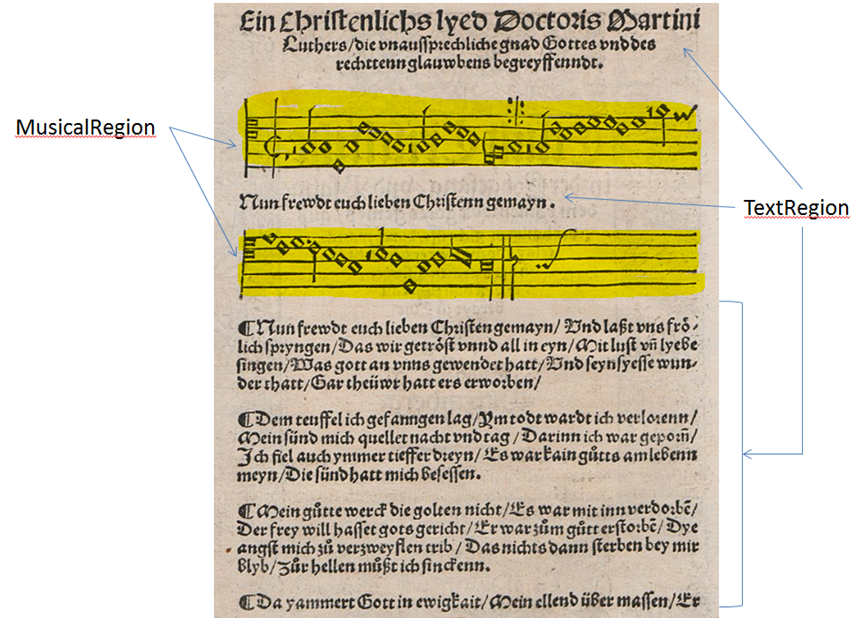
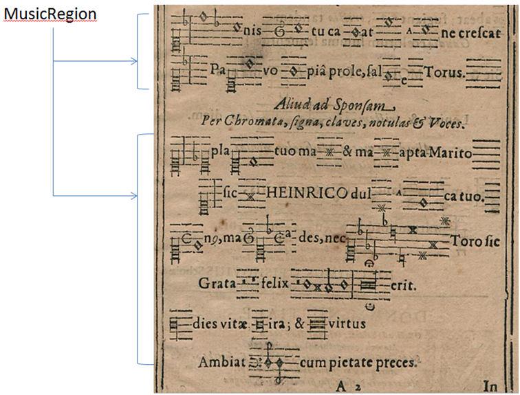

Noten (MusicRegion)
Musiknotationen aller Art (historische, modern oder Neumen) werden als solche gekennzeichnet. Wenn bei Liedern Texte unterhalb von einzelnen Notensystemen stehen und eine klare Trennung erkennbar ist, wird jedes System (auch als Notenzeile bezeichnet) als Notenregion gekennzeichnet, die Texte als Textregion. Sollten jedoch Texte unmittelbar in geklammerte Notensysteme integriert sein, wird der Text nicht als solcher berücksichtigt und die ganze Region als Notenregion ausgezeichnet.

